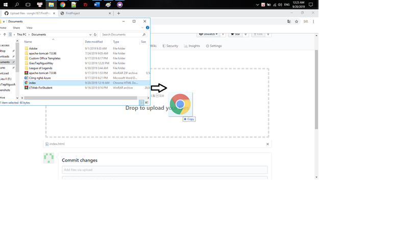

Github là một dịch vụ cung cấp kho lưu trữ mã nguồn Git dựa trên nền web cho các dự án phát triển phần mềm. GitHub cung cấp cả phiên bản trả tiền miễn phí cho các tài khoản. Các dự án mã nguồn mở sẽ được cung cấp kho lưu trữ miễn phí.
GitHub là tên gọi của một Hệ thống quản lý phiên bản phân tán (Distributed Version Control System – DVCS) là một trong những hệ thống quản lý phiên bản phân tán phổ biến nhất hiện nay. DVCS nghĩa là hệ thống giúp mỗi máy tính có thể lưu trữ nhiều phiên bản khác nhau của một mã nguồn được nhân bản (clone) từ một kho chứa mã nguồn (repository), mỗi thay đổi vào mã nguồn trên máy tính sẽ có thể ủy thác (commit) rồi đưa lên máy chủ nơi đặt kho chứa chính. Và một máy tính khác (nếu họ có quyền truy cập) cũng có thể clone lại mã nguồn từ kho chứa hoặc clone lại một tập hợp các thay đổi mới nhất trên máy tính kia. Trong Git, thư mục làm việc trên máy tính gọi là Working Tree.
Có rất nhiều lợi thế để bạn nên sử dụng Git trong việc lập trình ngay từ hôm nay, bất kể là lập trình cái gì đi chăng nữa :
Điền các thông tin tài khoản, địa chỉ email, mật khẩu

Sau đó chọn vào Create an account

Chọn Verify

Điều chỉnh hình ảnh cho hợp lí sau đó chọn Done

Chọn phần Free sau đó chọn Continue
Chọn Submit

Vào email đăng ký tài khoản để xác nhận

Vào lại GitHub chọn New để tạo New Repositories

Đặt tên cho Repositories chọn vào Initialize this repository with a README và chọn Create repositories

Chọn vào repositories mới khởi tạo

Chọn Setting

Kéo xuống tới mục GitHub Pages chọn Master Branch
Trang web cơ bản đã được tạo
Chọn Upload Files để thêm dữ liệu
Viết giao diện bạn cần bằng html sau đó kéo file vào
Chọn Commit Changes
Kết Quả